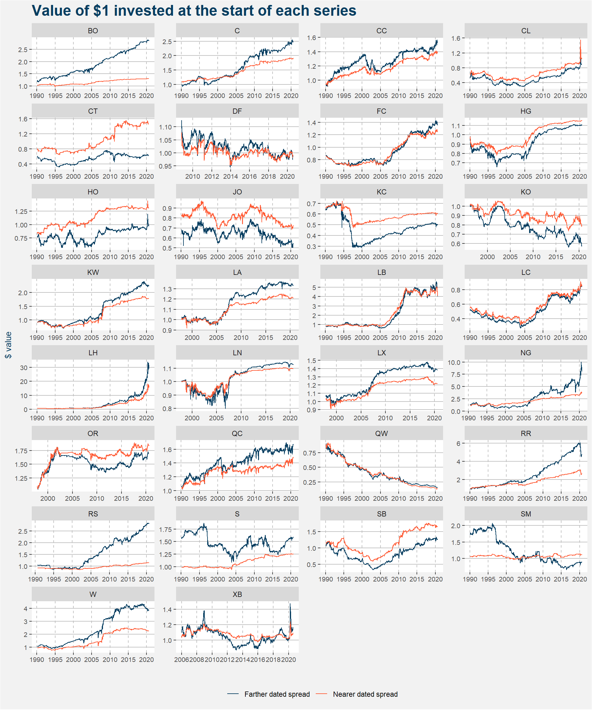
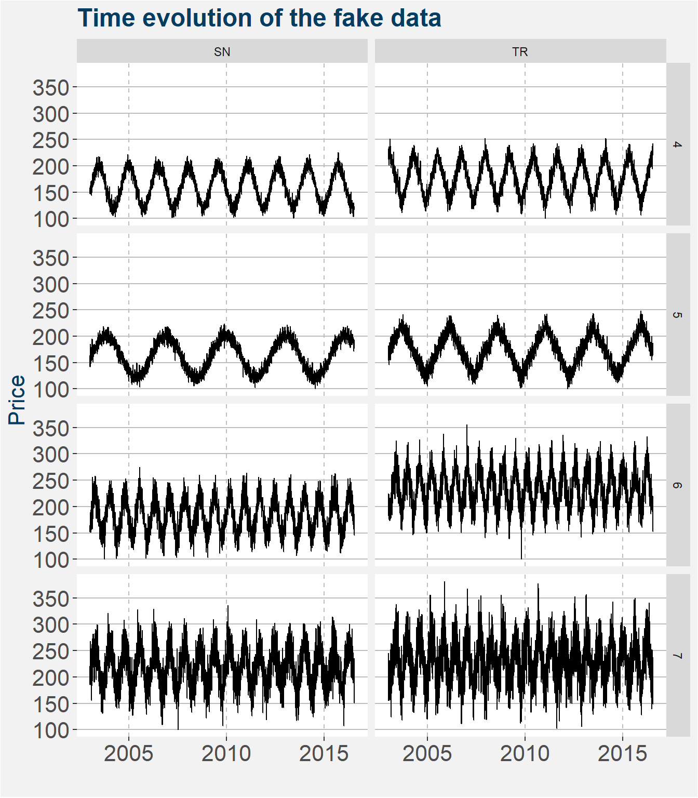

Section 2 Strategy Information
In its current form, the Polar Star Quantitative Commodity Fund makes use of two flavours of quantitative strategies namely
- Curve Carry and
- Trend Following.
In the following, we will take a closer look at each of the strategies.
2.1 Curve Carry
The Curve Carry strategy tries to harness predictable and repeatable calendar spread dynamics in a universe of commodities given in the table below.
| N | Commodity | Long Name | Sector |
|---|---|---|---|
| 1 | JO | Orange Juice | Dairy and Juice |
| 2 | CL | WTI Crude Oil | Energies |
| 3 | HO | Heating Oil | Energies |
| 4 | NG | Natural Gas | Energies |
| 5 | QS | Gas Oil | Energies |
| 6 | XB | Gasoline | Energies |
| 7 | BO | Soybean Oil | Grains and Oilseeds |
| 8 | C | Corn | Grains and Oilseeds |
| 9 | KO | Palm Oil | Grains and Oilseeds |
| 10 | KW | Kansas Wheat | Grains and Oilseeds |
| 11 | RR | Rough Rice | Grains and Oilseeds |
| 12 | RS | Canola | Grains and Oilseeds |
| 13 | S | Soybeans | Grains and Oilseeds |
| 14 | SM | Soybean Meal | Grains and Oilseeds |
| 15 | W | Chicago Wheat | Grains and Oilseeds |
| 16 | LB | Lumber | Industrial Materials |
| 17 | HG | Copper | Industrial Metals |
| 18 | LA | Aluminium | Industrial Metals |
| 19 | LN | Nickel | Industrial Metals |
| 20 | LX | Zinc | Industrial Metals |
| 21 | FC | Feeder Cattle | Meats and Livestock |
| 22 | LC | Live Cattle | Meats and Livestock |
| 23 | LH | Lean Hogs | Meats and Livestock |
| 24 | CC | New York Cocoa | Soft Commodities |
| 25 | CT | Cotton | Soft Commodities |
| 26 | DF | Robusta Coffee | Soft Commodities |
| 27 | KC | Arabica Coffee | Soft Commodities |
| 28 | QC | London Cocoa | Soft Commodities |
| 29 | QW | Refined Sugar | Soft Commodities |
| 30 | SB | Raw Sugar | Soft Commodities |
During each month and for all the commodities shown we have identified calendar spreads that have repeatable behaviour year after year. In most cases, we make a profit from the curve carry strategy by taking a bet that the shape of the commodity futures curve will become more contango or remain unchanged going into expiry of the near dated contract. This phenomenon of increasing contango is especially common in commodities that have a storage component associated in their cost structures. Commodity futures curves are divided by obstacles to intertemporal arbitrage. The costlier the storage, the greater is the division and the variability of carry. The segmented commodity futures curve is shaped by four factors:
- Funding and storage costs,
- Expected supply and demand imbalanced,
- Convenience yields and
- Hedging pressure.
Under normal conditions, commodity producers take short futures positions in the deferred parts of the commodity futures curve to hedge against price drops. The investor or speculator that offers this insurance is paid a premium and takes a long position in the futures contract. This positive premium comes in the form of the carry premium. On the other hand, commodity consumers take long futures positions in nearer dated contracts to hedge against unexpected future price surges. The investor or speculator that offers this insurance receives a premium for taking up the risk and takes a short position, in which case contango arises.
In the plot below we show the cumulative returns from short near and far dated calendar spreads in the commodities shown. To be clear, short spread implies a short position in the near dated contract and a long position in the far dated contract. For every commodity and spread tenure, we use the ETF-trick to show the value of a $1 investment at the start of the time-series. If the value of the investment increases, it implies the spread became more contango. If it decreases the spread became more backwardated. The plot below gives a bird’s eye view of these return streams. Some of the series are choppy such as those of DF and JO, while others are smooth and almost linear. Most of the curve carry returns are positive over the long run but there are a couple of exceptions, the most prominent one being QW.

Similar to the way a trend following portfolio is constructed by scaling the different return series for volatility and taking the global correlation structure into account we perform a bootstrapping procedure to determine baseline weights for the different commodity calendar spread pairs from month to month. The last piece of the system is the risk management of the strategy which is performed using meta-labeling.
Meta-labelling is a machine learning technique used to determine the probability that a trade will be in the money. It consists of a binary classification algorithm for each commodity-calendar-spread pair that takes a collection of time-series features as input parameters. For our purposes, we make use of Scikit Learn’s Random Forest classifier algorithm. For a detailed discussion on how to label time series data for use in machine learning applications, the work of Marcos Lopez de Prado is invaluable. Finally, we make use of the probability of the trade to be in the money to scale the positions within the portfolio. If a calendar loses 50 bps we close half the positions, another 25 bps and we close out the remaining spreads.
Below we show the step-by-step process involved in the strategy:
- At the beginning of the month determine the full fund NAV.
- Calculate the Curve Carry split of the NAV.
- Look up the commodities and calendar spreads to be allocated to during the current month, this also determines the side of the bet.
- Calculate roll adjusted time-series.
- Use the returns from roll adjusted time-series to determine ETF prices of the near and far dated calendar spreads for each commodity.
- Make use of bootstrapping process to determine baseline instrument weights.
- Calculate a collection of time-series features for use in meta-labelling.
- Fractionally differentiate input features to ensure stationarity.
- Train meta-label models - quarterly.
- Apply meta-label models to each of the commodity-calendar-spread pairs to determine the probability of profit.
- Scale baseline weights according to meta-labelling output.
- Create orderbook of target number of contracts.
- Roll half of the portfolio forward on business day 2 - We make use of EMSX to route trades through Bloomberg to our traders at SocGen.
- Finish the roll forward on business day 3.
As the NAV of the fund grows, we will split the allocation to the Curve Carry Strategy in buckets and treat eat bucket as a separate strategy with a different roll timing methodology. On the first split, we will add a roll on business days 10 and 11. The main reason for this is to avoid rebalance timing luck as much as possible. With limited AUM this is not currently feasible.
2.2 Trend Following
Our trend following philosophy is greatly inspired by the works of
with the exception that we focus only on commodity markets. Here we make use of our fundamental team’s expertise in determining the roll schedules and contracts that we are involved in for each of the commodities. For many of the commodities, we are looking at two different parts of the curve to add a layer of diversification. Our trend following commodity universe is listed in the table below.
| N | Commodity | Long Name | Sector |
|---|---|---|---|
| 1 | CHE | Cheese | Dairy and Juice |
| 2 | DA | Milk | Dairy and Juice |
| 3 | JO | Orange Juice | Dairy and Juice |
| 4 | CL | WTI Crude Oil | Energies |
| 5 | CO | Brent Crude Oil | Energies |
| 6 | HO | Heating Oil | Energies |
| 7 | NG | Natural Gas | Energies |
| 8 | QS | Gas Oil | Energies |
| 9 | XB | Gasoline | Energies |
| 10 | BO | Soybean Oil | Grains and Oilseeds |
| 11 | C | Corn | Grains and Oilseeds |
| 12 | KO | Palm Oil | Grains and Oilseeds |
| 13 | KW | Kansas Wheat | Grains and Oilseeds |
| 14 | MW | Minneapolis Wheat | Grains and Oilseeds |
| 15 | RR | Rough Rice | Grains and Oilseeds |
| 16 | RS | Canola | Grains and Oilseeds |
| 17 | S | Soybeans | Grains and Oilseeds |
| 18 | SM | Soybean Meal | Grains and Oilseeds |
| 19 | W | Chicago Wheat | Grains and Oilseeds |
| 20 | LB | Lumber | Industrial Materials |
| 21 | OR | Rubber | Industrial Materials |
| 22 | HG | Copper | Industrial Metals |
| 23 | LA | Aluminium | Industrial Metals |
| 24 | LN | Nickel | Industrial Metals |
| 25 | LX | Zinc | Industrial Metals |
| 26 | FC | Feeder Cattle | Meats and Livestock |
| 27 | LC | Live Cattle | Meats and Livestock |
| 28 | LH | Lean Hogs | Meats and Livestock |
| 29 | GC | Gold | Precious Metals |
| 30 | PA | Palladium | Precious Metals |
| 31 | PL | Platinum | Precious Metals |
| 32 | SI | Silver | Precious Metals |
| 33 | CC | New York Cocoa | Soft Commodities |
| 34 | CT | Cotton | Soft Commodities |
| 35 | DF | Robusta Coffee | Soft Commodities |
| 36 | KC | Arabica Coffee | Soft Commodities |
| 37 | QC | London Cocoa | Soft Commodities |
| 38 | QW | Refined Sugar | Soft Commodities |
| 39 | SB | Raw Sugar | Soft Commodities |
We took a page from Robert Carver’s work in designing and not fitting a trend following strategy. To this end, we constructed fake trendy data of different lengths, shapes and added volatilities. We are specifically interested in medium to long term trends ranging from one to eighteen months in length. Examples of fake trendy data are shown in the image below.

Like most trend following systems, we scale positions according to individual instrument volatility and correlations with the other instruments. We make use of a collection of different trend signals in determining the overall signal for each instrument. Position sizes are scaled continuously depending on the signal strength and we do not make use of stop-losses. The strategy targets annual volatility of 20%.
Carver inspired us to follow the scaled forecast methodology where an average positive trend is awarded a value of +10, while an average negative trend is given the value of -10. We cap the size of the scaled forecasts at +20 and -20. Long signals are initiated with scaled aggregated forecasts that are greater than 0. Similarly, short positions are initiated with signals of less than 0.
Below we show the step-by-step process involved in the strategy:
- At the beginning of the month determine the full fund NAV.
- Calculate the Trend Following split of the NAV.
- Determine when to roll contracts forward, if at all.
steps 1 to 3 are determined at the beginning of each month, the remainder of the steps are performed on a daily basis.
Calculate roll adjusted time-series.
Calculate trend forecasts signals on roll adjusted time-series
5.1 Exponentially Weighted Moving Averages
5.2 Donchain Breakouts
5.3 Lookback windows ranging from one to eighteen months
Calculate aggregate forecast taking into account signal correlations and volatility.
Determine target position sizes using the aggregate forecast, instrument volatility and correlation structure.
Orderbook generated from the difference between current and target number of contracts for each commodity and contract code. To avoid overtrading we apply a 10% threshold to the change in position.
Trades routed using EMSX to traders at SocGen.
The trend system gets awarded and allocation of between 35 and 25% of the capital. This is a discretionary split that relies on the portfolio manager’s comfort level as well as some baseline weights calculated using the Black-Litterman approach to portfolio optimisation.
2.3 Remarks
We are constantly exploring possible additional strategies to add to the main quantitative fund. These new strategies are tested with real money inside the much larger Polar Star Limited Flagship relative value commodity fund. The addition of these strategies into the quantitative fund is subject to available AUM.